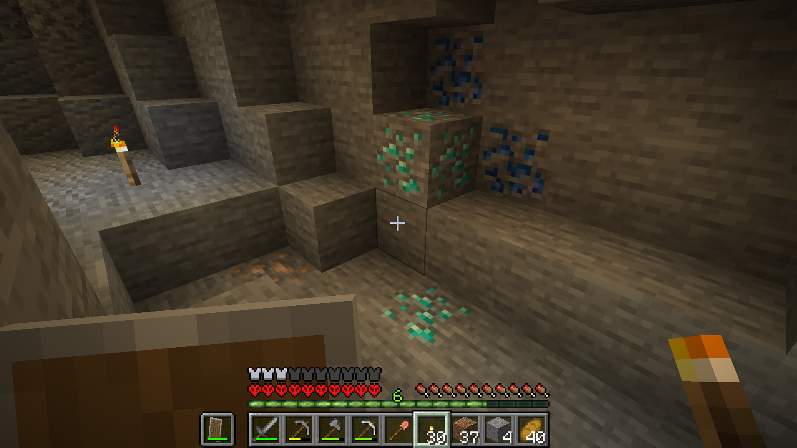
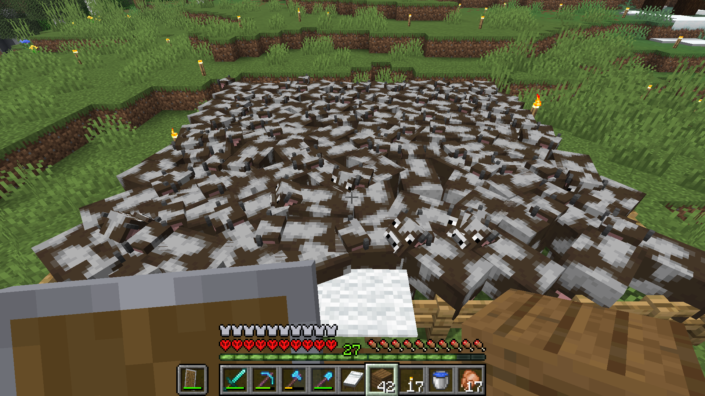
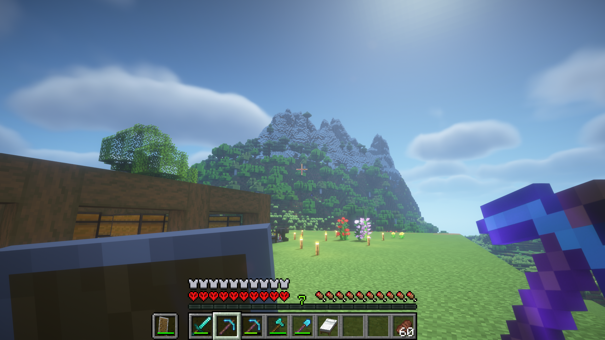
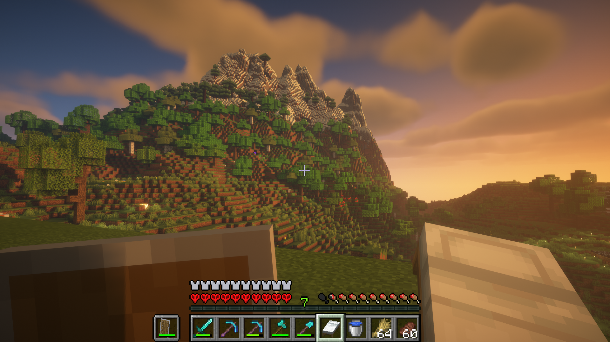
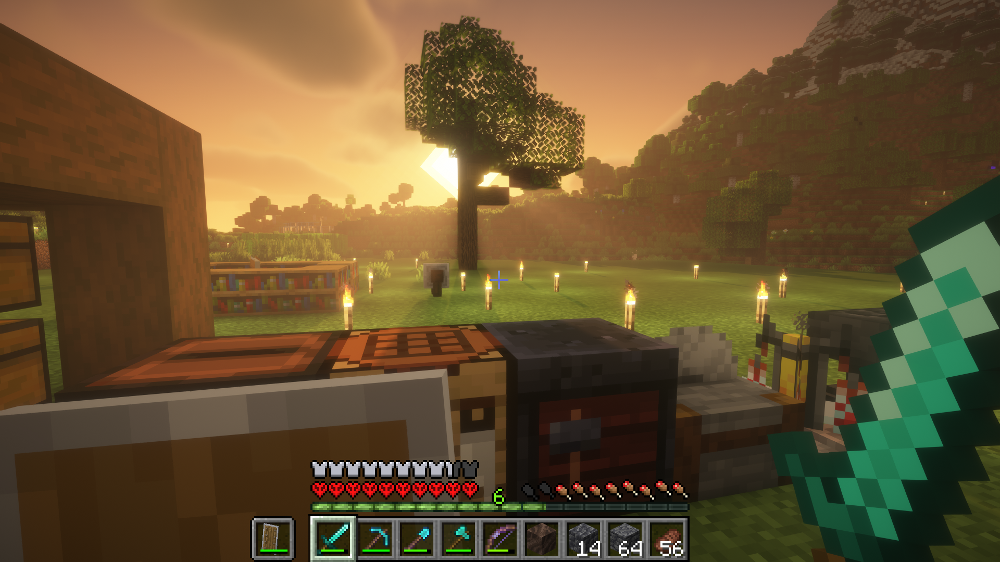
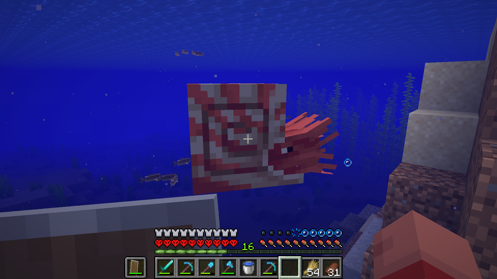

Minecraft hardcore
Go BackA week ago, I started my own hardcore world in minecraft. I tried it many times before, however, I always died stupidly, for example, in caves, creeper explosions, drowned zombies with trident and more. But this time i have survived a bit more than that and I am still surviving.
I was not playing the game for a while but recently, I watched pewdiepie playing his own hardcore world and I was inspired to try again. I really really liked his base and watching his journey was fun and interesting. Unfortunately, he is not continueing it anymore :(
Okay my journey now. These are some screenshots i took while playing but i dont have all of them right now. Will post more about other staff later...
This image shows my first diamonds - and its rare type of diamond ore :)
This one shows my cow farm - my main food source.
Mountain view with BSL shaders. my laptop cries while im using this shader and it makes very loud noises and a bit lags too
  New nautilus mob
Yea, for now that is it. I will make more posts...
I really do not know what kind of mega base i can build. I really liked pewdiepie's inferno vibe but will it now be stealing the others idea?! or just copying it and i dunno playing it not for myself
i have done this kind of thing all my life!
for example, when i was kid, my dad had wallet with many pockets. but i wanted my own too even if i did not have any money so i made my own with cardboards. the result was pretty cool. it was similar to his though... but one day, i was angry and just destroyed it for some reason
my friend at lyceum, had his notebook where he kept his new vocabulary words and sat math formulas or tips or whatever notes related to college application, ielts, sat... i tried similar thing too but it was never effective but the way he kept it was lookin very "?" i dunno how to explain but smart hell knows
and more these kind of stories and things i have got and do which i hate and i always fckn copy. why i dont have fckn my vibe
again, stupid whining of me